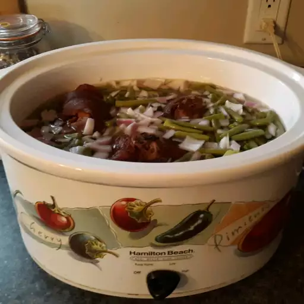

Crockpot ham potatoes and greenbeans
Slow Cooker Ham and potatoes

Ingredients
- 2 lb green beans
- 3 ham hocks
- Large onion chopped
- 1 lb potatoes quartered
- 1 Tbs chicken bouillon
- 1 tsp garlic powder
- 1 tsp onion powder
- 1 tsp seasoning salt
- Ground black pepper to taste
Directions
- Halve green beans if they are large; place in a slow cooker with water to barely cover. Add ham hocks and onion. Cover and cook on High until simmering. Reduce heat to Low; cook until beans are crisp but not done, 2 to 3 hours.
- Remove ham hocks from the slow cooker. Add potatoes to the slow cooker; cook on Low for 45 minutes.
- Meanwhile, remove ham meat from the bones, then chop or shred meat and return to the slow cooker. Season with bouillon, garlic powder, onion powder, seasoning salt, and pepper.
- Use a slotted spoon to transfer green beans, potatoes, and ham into a serving dish with a bit of broth.